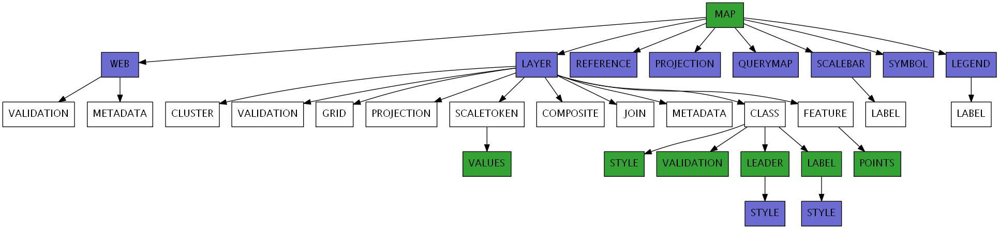

MAP¶
Note
The map object is started with the word MAP, and ended with the word END.

- ANGLE [double]
Angle, given in degrees, to rotate the map. Default is 0, and must be in the range -360 to 360. The rendered map will rotate in a clockwise direction. The following are important notes:
Requires a PROJECTION object specified at the MAP level and for each LAYER object (even if all layers are in the same projection).
Requires MapScript (SWIG, PHP MapScript). Does not work with CGI mode.
If using the LABEL object’s ANGLE or the LAYER object’s LABELANGLEITEM parameters as well, these parameters are relative to the map’s orientation (i.e. they are computed after the MAP object’s ANGLE). For example, if you have specified an ANGLE for the map of 45, and then have a layer LABELANGLEITEM value of 45, the resulting label will not appear rotated (because the resulting map is rotated clockwise 45 degrees and the label is rotated counter-clockwise 45 degrees). Note that a missing ANGLE or a value set to 0 means that map rotation is ignored. (so if wanting to have a zero relative angle relative to the map rotation, use an almost zero value like 0.0001)
Starting with MapServer 7.2, if using the STYLE . ANGLE parameter of a punctual symbol, that parameter is relative to the map’s orientation (i.e. it is computed after the MAP object’s ANGLE). For example, if you have specified an ANGLE for the map of 45, and then have a symbol ANGLE value of 45, the resulting label will not appear rotated (because the resulting map is rotated clockwise 45 degrees and the label is rotated counter-clockwise 45 degrees). Note that a missing ANGLE or a value set to 0 means that map rotation is ignored. (so if wanting to have a zero relative angle relative to the map rotation, use an almost zero value like 0.0001)
More information can be found on the MapRotation Wiki Page.
- CONFIG [key] [value]
This can be used to specify several values at run-time, for both MapServer and GDAL/OGR libraries. Developers: values will be passed on to CPLSetConfigOption(). Details on GDAL/OGR options are found in their associated driver documentation pages (GDAL/OGR). The following options are available specifically for MapServer:
- CGI_CONTEXT_URL [value]
This CONFIG parameter can be used to enable loading a map context from a URL. See the Map Context HowTo for more info.
- MS_ENCRYPTION_KEY [filename]
This CONFIG parameter can be used to specify an encryption key that is used with MapServer’s msencypt utility.
- MS_ERRORFILE [filename]
This CONFIG parameter can be used to write MapServer errors to a file (as of MapServer 5.0). With MapServer 5.x, a full path (absolute reference) is required, including the filename. Starting with MapServer 6.0, a filename with relative path can be passed via this CONFIG directive, in which case the filename is relative to the mapfile location. Note that setting MS_ERRORFILE via an environment variable always requires an absolute path since there would be no mapfile to make the path relative to. For more on this see the DEBUG parameter below.
- MS_NONSQUARE [yes|no]
This CONFIG parameter can be used to allow non-square pixels (meaning that the pixels represent non-square regions). For “MS_NONSQUARE” “yes” to work, the MAP, and each LAYER will have to have a PROJECTION object.
Note
Has no effect for WMS.
- ON_MISSING_DATA [FAIL|LOG|IGNORE]
This CONFIG parameter can be used to tell MapServer how to handle missing data in tile indexes (as of MapServer 5.3-dev, r8015). Previous MapServer versions required a compile-time switch (“IGNORE_MISSING_DATA”), but this is no longer required.
- FAIL
This will cause MapServer to throw an error and exit (to crash, in other words) on a missing file in a tile index. This is the default.
CONFIG "ON_MISSING_DATA" "FAIL"
- LOG
This will cause MapServer to log the error message for a missing file in a tile index, and continue with the map creation. Note: DEBUG parameter and CONFIG “MS_ERRORFILE” need to be set for logging to occur, so please see the DEBUG parameter below for more information.
CONFIG "ON_MISSING_DATA" "LOG"
- IGNORE
This will cause MapServer to not report or log any errors for missing files, and map creation will occur normally.
CONFIG "ON_MISSING_DATA" "IGNORE"
- PROJ_DATA [path]
This CONFIG parameter can be used to define the location of your EPSG files for the PROJ library. Setting the [key] to PROJ_DATA and the [value] to the location of your EPSG files will force PROJ to use this value. Using CONFIG allows you to avoid setting environment variables to point to your PROJ_DATA directory. Here are some examples:
Tip
Since the PROJ 9.1 release, the former PROJ_LIB variable has been replaced with PROJ_DATA
Unix
CONFIG "PROJ_DATA" "/usr/local/share/proj/"
Windows
CONFIG "PROJ_DATA" "/ms4w/share/proj"
- PROJ_DEBUG [ON|OFF]
Turn on PROJ debugging. See Debugging MapServer for more details.
DATAPATTERN [regular expression]
Removed in version 8.0: See VALIDATION instead
This defines a regular expression to be applied to requests to change DATA parameters via URL requests (i.e. map.layer[layername]=DATA+…). If a pattern doesn’t exist then web users can’t monkey with support files via URLs. This allows you to isolate one application from another if you desire, with the default operation being very conservative. See also TEMPLATEPATTERN.
- DEBUG [off|on|0|1|2|3|4|5]
Enables debugging of all of the layers in the current map.
Debugging with MapServer versions >= 5.0:
Verbose output is generated and sent to the standard error output (STDERR) or the MapServer errorfile if one is set using the “MS_ERRORFILE” environment variable. You can set the environment variable by using the CONFIG parameter at the MAP level of the mapfile, such as:
CONFIG "MS_ERRORFILE" "/ms4w/tmp/ms_error.txt"
You can also set the environment variable in Apache by adding the following to your httpd.conf:
SetEnv MS_ERRORFILE "/ms4w/tmp/ms_error.txt"
Once the environment variable is set, the DEBUG mapfile parameter can be used to control the level of debugging output. Here is a description of the possible DEBUG values:
DEBUG O or OFF - only msSetError() calls are logged to MS_ERRORFILE. No msDebug() output at all. This is the default and corresponds to the original behavior of MS_ERRORFILE in MapServer 4.x.
DEBUG 1 or ON - includes all output from DEBUG 0 plus msDebug() warnings about common pitfalls, failed assertions or non-fatal error situations (e.g. missing or invalid values for some parameters, missing shapefiles in tileindex, timeout error from remote WMS/WFS servers, etc.).
DEBUG 2 - includes all output from DEBUG 1 plus notices and timing information useful for tuning mapfiles and applications.
DEBUG 3 - all of DEBUG 2 plus some debug output useful in troubleshooting problems such as WMS connection URLs being called, database connection calls, etc. This is the recommended level for debugging mapfiles.
DEBUG 4 - DEBUG 3 plus even more details…
DEBUG 5 - DEBUG 4 plus any msDebug() output that might be more useful to the developers than to the users.
You can also set the debug level by using the “MS_DEBUGLEVEL” environment variable.
The DEBUG setting can also be specified for a layer, by setting the DEBUG parameter in the LAYER object.
For more details on this debugging mechanism, please see the Debugging MapServer document.
Debugging with MapServer versions < 5:
Verbose output is generated and sent to the standard error output (STDERR) or the MapServer logfile if one is set using the LOG parameter in the WEB object. Apache users will see timing details for drawing in Apache’s error_log file. Requires MapServer to be built with the DEBUG=MSDEBUG option (–with-debug configure option).
- DEFRESOLUTION [double]
Added in version 5.6.
Sets the reference resolution (pixels per inch) used for symbology. Default is 72. Minimum is 10 and maximum is 1000.
Used to automatically scale the symbology when RESOLUTION is changed, so the map maintains the same look at each resolution. The scale factor is RESOLUTION / DEFRESOLUTION.
- EXTENT [minx] [miny] [maxx] [maxy]
The spatial extent of the map to be created. In most cases you will need to specify this, although MapServer can sometimes (expensively) calculate one if it is not specified.
- FONTSET [filename]
Filename of fontset file to use. Can be a path relative to the mapfile, or a full path.
- IMAGECOLOR [r] [g] [b] | [hexadecimal string]
Color to initialize the map with (i.e. background color). When transparency is enabled (TRANSPARENT ON in OUTPUTFORMAT) for the typical case of 8-bit pseudocolored map generation, this color will be marked as transparent in the output file palette. Any other map components drawn in this color will also be transparent, so for map generation with transparency it is best to use an otherwise unused color as the background color.
r, g and b shall be integers [0..255]. To specify green, the following is used:
IMAGECOLOR 0 255 0
hexadecimal string can be
RGB value: “#rrggbb”. To specify magenta, the following is used:
IMAGECOLOR "#FF00FF"
RGBA value (adding translucence): “#rrggbbaa”. To specify a semi-translucent magenta, the following is used:
IMAGECOLOR "#FF00FFCC"
- IMAGEQUALITY [int]
Removed in version 8.0.
Instead use FORMATOPTION “QUALITY=n” in the OUTPUTFORMAT declaration to specify compression quality for JPEG output.
- IMAGETYPE [jpeg|pdf|png|svg|…|userdefined]
Output format (raster or vector) to generate. The name used here must match the ‘NAME’ of a user defined or internally available OUTPUTFORMAT. For a complete list of available IMAGEFORMATs, see the OUTPUTFORMAT section.
- INTERLACE [on|off]
Removed in version 8.0.
Instead use FORMATOPTION “INTERLACE=ON” in the OUTPUTFORMAT declaration to specify if the output images should be interlaced.
- MAXSIZE [integer]
Sets the maximum size of the map image. This will override the default value. For example, setting this to 4096 means that you can have up to 4096 pixels in both dimensions (i.e. max of 4096x4096). Default is 4096 for MapServer version >= 7.0.3 (for earlier versions the default was 2048). Must be a value greater than 0.
- NAME [name]
Prefix attached to map, scalebar and legend GIF filenames created using this mapfile. It should be kept short.
- OUTPUTFORMAT
Signals the start of a OUTPUTFORMAT object.
- PROJECTION
Signals the start of a PROJECTION object.
- RESOLUTION [double]
Sets the pixels per inch for output, only affects scale computations. Default is 72. Minimum is 10 and maximum is 1000.
- SCALEDENOM [double]
Computed scale of the map. Set most often by the application. Scale is given as the denominator of the actual scale fraction, for example for a map at a scale of 1:24,000 use 24000. Implemented in MapServer 5.0, to replace the deprecated SCALE parameter. Must be greater or equal to 1.
See also
- SCALEBAR
Signals the start of a SCALEBAR object.
- SHAPEPATH [foldername]
Relative or absolute path to the directory holding the data files, for vector and raster formats (such as GeoPackages, GEOJSON, SpatiaLite, Shapefiles, raster images, tiles, etc.). This path will be used to find the file specified through the DATA or CONNECTION parameters. For relative paths, SHAPEPATH is relative to the mapfile location. There can be further subdirectories under SHAPEPATH.
Here is an example using relative paths (where the DATA folder lives at the same level as the mapfile and the DATA folder contains a SpatiaLite db) :
MAP ... SHAPEPATH "./data" ... LAYER ... CONNECTIONTYPE OGR CONNECTION "world.db" DATA "lakes" ... END #layer END #mapfile
- SIZE [x][y]
Size in pixels of the output image (i.e. the map). Values must be less than the MAXSIZE property.
- STATUS [on|off]
Is the map active? Sometimes you may wish to turn this off to use only the reference map or scale bar.
- SYMBOLSET [filename]
Filename of the symbolset to use. Can be a path relative to the mapfile, or a full path.
Note
The SYMBOLSET file must start with the word SYMBOLSET and end with the word END.
- SYMBOL
Signals the start of a SYMBOL object.
TEMPLATEPATTERN [regular expression]
Removed in version 8.0: See VALIDATION instead
This defines a regular expression to be applied to requests to change the TEMPLATE parameters via URL requests (i.e. map.layer[layername].template=…). If a pattern doesn’t exist then web users can’t monkey with support files via URLs. This allows you to isolate one application from another if you desire, with the default operation being very conservative. See also DATAPATTERN.
TRANSPARENT [on|off]
Removed in version 8.0.
Instead use TRANSPARENT ON in the OUTPUTFORMAT declaration to specify if the output images should be transparent.
- UNITS [dd|feet|inches|kilometers|meters|miles|nauticalmiles]
Units of the map coordinates. Used for scalebar and scale computations. Nauticalmiles was added in MapServer 5.6.